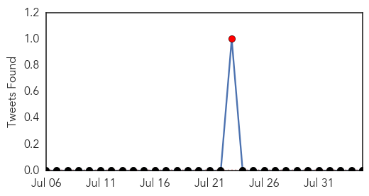
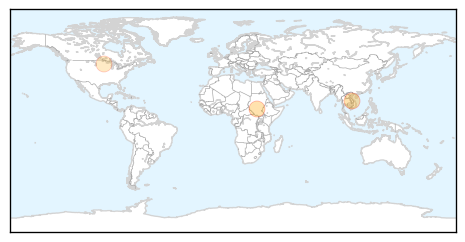
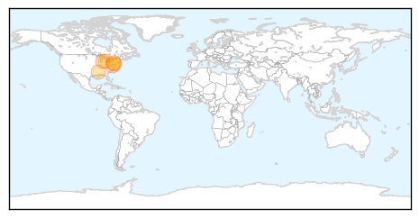

Hepatitis
30-Day Web Trend
4 alerts, 7 warnings

30-Day Twitter Trend
1 alerts, 0 warnings

Article Locations
Article Confidences

Top Articles:
Top Tweets:
-
No tweets found for Aug 04, 2015
West Nile Virus
30-Day Web Trend
10 alerts, 3 warnings
30-Day Twitter Trend
4 alerts, 0 warnings

Article Locations
Article Confidences
Top Articles:
- 0.997
- West Nile virus detected in bird in Allegan County
- 0.985
- Mississippi reports third West Nile virus case in 2015
- 0.944
- West Nile virus detected in mosquitoes in Dodge County
- 0.936
- West Nile case reported in Camden County
- 0.902
- West Nile case in Camden County marks first in N.J. in 2015
- 0.858
- Mosquitoes in Oakland test positive for West Nile virus
- 0.821
- South Meadows Mosquito Sample Tests Positive for West Nile
Top Tweets:
-
No tweets found for Aug 04, 2015